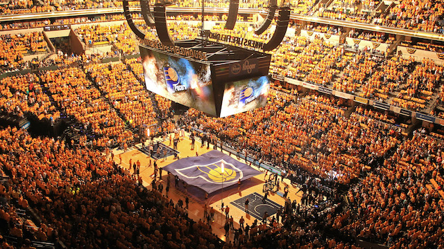

Indiana Pacers - Fundada em 1967, a equipe foi uma das mais vitoriosas da ABA antes de se juntar à NBA. Ao longo de sua história, a franquia conquistou destaque, especialmente nos anos 90, com a liderança de Reggie Miller, um dos maiores ícones da NBA. O time tem sido consistentemente competitivo e, recentemente, está construindo uma nova geração com jogadores como Tyrese Haliburton e Bennedict Mathurin.
Elenco - Tyrese Haliburton (#0), Bennedict Mathurin (#00), Buddy Hield (#24), Myles Turner (#33), Jalen Smith (#25), Bruce Brown (#11), Jarace Walker (#5), T.J. McConnell (#9).
Títulos NBA - Nenhum
Títulos Conferência - 1 (2000)
Estádio - Gainbridge Fieldhouse (17.923)
